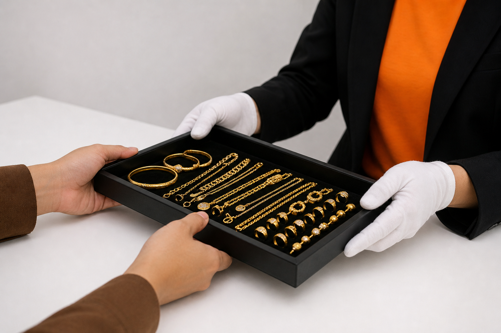

Pajak Gadai Emas
Pelanggan boleh mencagarkan barangan kemas emas untuk mendapatkan pembiayaan tunai segera berdasarkan nilai semasa emas dengan proses patuh Syariah.
Ar-Rahnu Prihatin menyediakan pelbagai perkhidmatan berkaitan pembiayaan emas, penilaian barang kemas serta urusan pajak gadai Islam yang cepat, telus dan selamat. Semua proses dijalankan mengikut prinsip Syariah bagi memastikan pelanggan memperoleh pengalaman transaksi yang lebih yakin dan dipercayai.
Dengan tenaga kerja yang berpengalaman serta sistem penilaian yang profesional, kami komited dalam membantu pelanggan mendapatkan penyelesaian kewangan segera tanpa unsur riba. Selain itu, barangan emas pelanggan turut disimpan dengan kawalan keselamatan yang ketat bagi menjamin keselamatan sepanjang tempoh pajakan.
Kami menyediakan pelbagai perkhidmatan berkaitan emas dan pembiayaan patuh Syariah bagi memenuhi keperluan pelanggan.

Pelanggan boleh mencagarkan barangan kemas emas untuk mendapatkan pembiayaan tunai segera berdasarkan nilai semasa emas dengan proses patuh Syariah.
Pelanggan juga boleh mendapatkan maklumat berkaitan urusan jual beli emas mengikut harga pasaran semasa.
Pelanggan boleh menebus semula barangan kemas yang dicagarkan pada bila-bila masa sepanjang tempoh pajakan dengan proses yang mudah dan cepat.
Ar-Rahnu Prihatin turut menyediakan perkhidmatan belian surat pajak daripada premis lain tertakluk kepada syarat dan penilaian semasa.
Pelanggan boleh membuat rundingan untuk menambah atau mengurangkan nilai pembiayaan berdasarkan nilai semasa emas yang dicagarkan.
Perkhidmatan pembaharuan surat pajak disediakan bagi membantu pelanggan melanjutkan tempoh simpanan emas mengikut syarat yang ditetapkan.
Pilih jenis transaksi di bawah untuk melihat proses lengkap langkah demi langkah.
Segala maklumat mengenai urusan cagaran, jual beli, dan penebusan emas di Ar-Rahnu kami.
Tempoh matang standard bagi setiap surat pajak adalah selama 6 bulan dari tarikh transaksi dibuat.
Kadar upah simpan adalah sebanyak 2% daripada Nilai Marhun (nilai emas) anda.
Boleh. Kami menerima pelbagai kondisi emas asalkan ia adalah milik mutlak anda dan tulen mengikut penilaian pakar kami.
Margin pembiayaan yang ditawarkan biasanya adalah antara 70% hingga 80% daripada nilai semasa emas anda.
Kami menerima pelbagai mutu emas termasuk 999 (24K), 916 (22K), 875, 835, dan emas paun. Penilaian ketulenan akan dibuat sebelum urusan diteruskan.
Boleh. Anda digalakkan membayar secara berperingkat untuk meringankan beban semasa hari penebusan nanti.
Boleh. Anda boleh bayar sebahagian nilai pinjaman (turun nilai). Bila jumlah pinjaman dah berkurang, caj upah simpan bulan seterusnya pun akan jadi lebih murah.
Emas anda akan dilelong atau dijual untuk menyelesaikan hutang tertunggak tersebut.
Boleh. Anda hanya perlu menjelaskan upah simpan tertunggak bagi tempoh 6 bulan pertama untuk mengeluarkan surat baru bagi tempoh 6 bulan berikutnya.
Anda perlu memaklumkan kepada kami untuk membuat Surat Akuan Sumpah bagi menggantikan surat asal. Caj RM10.00 akan dikenakan untuk dokumen baru ini.
Boleh, melalui Borang Pelantikan Wakil. Caj sebanyak RM10.00 akan dikenakan untuk urusan penebusan oleh wakil ini.
Anda hanya perlu bawa Kad Pengenalan (MyKad) yang asal sahaja untuk sebarang urusan di kaunter kami.
Jika anda pilih Tunai (Cash), duit akan dapat serta-merta. Bagi pindahan bank (Transfer), biasanya ambil masa dalam 30 minit (paling lewat jam 5 petang).
Ya, jangan risau. Segala maklumat anda adalah sulit dan dilindungi di bawah Akta Perlindungan Data Peribadi 2010.
Ada Fi Tawarruq RM1.00 untuk setiap transaksi. Selain itu, caj RM10.00 dikenakan jika anda wakil untuk menebus emas atau jika surat pajak asal anda hilang.
Ar-rahnu Prihatin Jitra
No. 2, Kompleks Jitra,
06000 Jitra, Kedah.